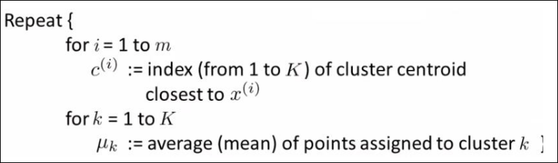

IA · curso 3
6. Aprendizaje no Supervisado · IA
6.1 Cambio de Paradigma: De la Etiqueta a la Estructura
En la Regresión Lineal y Logística (temas anteriores), siempre teníamos un conjunto de datos con la respuesta correcta:
En el Aprendizaje No Supervisado, la situación cambia radicalmente:
- Datos: Solo tenemos
(Datos sin etiquetar). No hay . - Objetivo: El algoritmo debe encontrar estructuras, patrones o agrupamientos en los datos por sí mismo.
- Rol del Humano: Es el diseñador quien, a posteriori, le da significado a esos grupos (ej. "Este grupo son clientes VIP", "Este grupo son clientes en riesgo").
6.2 El Algoritmo K-Medias (K-Means)
Es el algoritmo más popular y sencillo para resolver problemas de Agrupamiento (Clustering). Su objetivo es dividir los datos en
Es un proceso iterativo ("bucle") que funciona como un baile de centros de gravedad.
-
Inicialización:
- Decidimos cuántos grupos queremos (
). - Elegimos aleatoriamente
puntos del mapa para que sean los Centroides iniciales ( ).
- Decidimos cuántos grupos queremos (
-
Bucle (Repetir hasta converger):
- Paso A: Asignación de grupos: Para cada dato (
), calculamos la distancia a todos los centroides y lo "pintamos" del color del centroide más cercano. - Paso B: Movimiento de Centroides: Calculamos la media (promedio) de todos los puntos que pertenecen a un grupo y movemos el centroide a esa nueva posición central.
- Paso A: Asignación de grupos: Para cada dato (

6.3 La Función de Coste (Distorsión)
Al igual que en la regresión teníamos el error cuadrático, aquí necesitamos medir "qué tan mal" están agrupados los datos. A esta función se le llama Función de Distorsión (
- Significado: Mide la suma de las distancias al cuadrado entre cada punto y el centroide de su grupo.
- Objetivo: Queremos minimizar
. Si es bajo, significa que los puntos están muy "apretaditos" alrededor de su centroide (buen agrupamiento).
6.4 Problemas y Soluciones
6.4.1 El Problema de los Mínimos Locales
Como los centroides iniciales se eligen al azar, a veces tenemos mala suerte.
-
Riesgo: Los centroides pueden quedarse "atascados" en una mala posición (Mínimo Local) y no encontrar la mejor agrupación posible (Óptimo Global).
-
Solución: No ejecutes el algoritmo una sola vez.
- Ejecuta K-Medias muchas veces (ej. 50 o 100 veces) con inicializaciones aleatorias diferentes.
- Calcula la Distorsión
final para cada intento. - Quédate con la solución que tenga la menor distorsión.
6.4.2 ¿Cómo elegir el número de grupos (K)?
A veces el número de grupos es obvio, pero otras veces no. ¿Son 3 grupos o 4?
-
Método del Codo (Elbow Method):
- Ejecutas el algoritmo variando
(ej. ). - Graficas la función de coste
vs. . - Al aumentar los grupos, el error siempre baja. Pero buscamos el punto donde la curva hace un codo (deja de bajar rápido y empieza a bajar lento). Ese es el
óptimo.
- Ejecutas el algoritmo variando
-
Propósito del Mercado (Market Purpose):
- A veces el "Codo" no es claro. En ese caso, el
lo dicta el negocio. - Ejemplo (Tallas de Camisetas): Tienes datos de altura y peso. Podrías hacer 3 grupos (S, M, L) o 5 grupos (XS, S, M, L, XL). La decisión depende de tu estrategia de ventas, no solo de la matemática.
- A veces el "Codo" no es claro. En ese caso, el
6.5 Resumen de Conexiones
Para tu esquema mental global:
- Regresión Lineal: Predice un número (Supervisado).
- Regresión Logística: Predice una clase binaria (Supervisado).
- K-Medias: Descubre grupos sin etiquetas (No Supervisado). Usa distancias geométricas (como los vecinos cercanos) y medias iterativas.